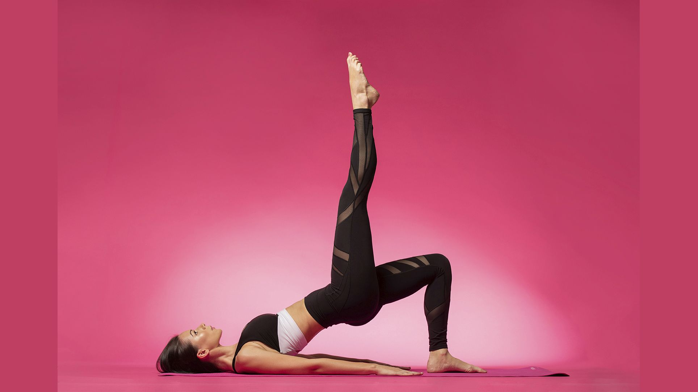

Respira hondo y lee con atención todo lo que el Yoga puede hacer por ti
- Reduce la ansiedad y el estrés. Según un estudio realizado Ronald C. Kessler, sociólogo y profesor en el Harvard Medical School de Massachusetts, la practica habitual del yoga disminuye el estado de ansiedad y el estrés de manera similar al de una terapia médica convencional ( aquello de tomar ansiolíticos) Aumenta la calidad del sueño y ayuda a dormir mejor.
- Otro estudio realizado por la Fundación para la investigación del Yoga Swami Vivekananda demostró que las personas que realizaban yoga tardaban 10 minutos menos de media en quedarse dormidas, e incrementaron el número de horas que dormían en un promedio de una hora más por noche. Además, expresaban la sensación de estar más descansadas por la mañana. Se trabaja mejor. Si tu trabajo te agota, no te gusta o te mueves en un hábitat laboral muy competitivo, el yoga puede ayudarte a salir del atolladero sin cambiar de trabajo. De nuevo otro estudio hindú que analiza cinco indicadores del rendimiento laboral (satisfacción, compromiso, resultados, implicación emocional y relaciones sociales con los compañeros) ha demostrado que los beneficios del yoga se apreciaban para el trabajador en cuatro de los cinco puntos analizados, solamente el nivel de compromiso quedó exento de sus bondades. En los niños y estudiantes, mejora el rendimiento académico y la atención. La atención a la respiración y la meditación que se incluye en la práctica del yoga, hacen posible alcanzar un estado mental más sereno, alejando nervios y estrés ante la presión de los estudios y mejorando el rendimiento. O lo que es lo mismo, estudiar menos y aprender más y más rápido. Mejor una hora de yoga que una noche en blanco a base de café para superar un examen, una oposición, una entrevista laboral,…. Fortalece huesos y músculos….¡Y sin agujetas! Si se realiza de manera progresiva y adaptada, el yoga evita que el ácido láctico se acumule en el cuerpo, además de reforzar los huesos evitando la pérdida de masa ósea y potenciar la flexibilidad de las articulaciones. Un gran antídoto natural contra la osteoporosis, por ejemplo. Aumenta la flexibilidad.
- A pesar de que al principio las posturas parezcan propias de un contorsionista, a medida que se avanza en su práctica, el yoga contribuye a potenciar la flexibilidad muscular. Cruzar las piernas en la postura del loto te resultará un juego de niños, y te servirá como plataforma para practicar tu deporte favorito evitando en gran medida el riesgo de lesiones. Contribuye a aliviar dolores crónicos y posturales. Con una práctica bien adaptada, el yoga es muy efectivo para paliar la mayoría de los dolores crónicos como el dolor de cuello, la artritis reumatoide, dolor de rodillas, lumbalgia, dolor de espalda crónico, ciática o fibromialgia, entre otros. Eso sí, es imprescindible contar con la buena guía de un maestro yogui para evitar lesiones. Es una magnífica terapia antiaging .
- Sí hay estudios recientes que sugieren que el yoga y la meditación ayudan a proteger el ADN de los daños provocados por el estilo de vida o el natural paso de los años. Se ha demostrado que su práctica habitual es capaz de revertir el proceso del envejecimiento ya que tiene una incidencia directa sobre la telomerasa, esa famosa enzima clave para proteger los telómeros, los extremos de los cromosomas que se acortan en cada división celular, que cuanto más largos sean, más vida nos auguran. Quema calorías. Una promesa que atrae a muchos y que se ha demostrado científicamente. Algunas investigaciones han consensuado que la práctica del Vinyasa Yoga implica un gasto calórico promedio de 7 kcal/min, lo que equivale a quemar unas 507 calorías por hora. Ideal como complemento a una dieta de adelgazamiento o para mantener la báscula a raya. Enseña a respirar no solo correctamente sino conscientemente.
- La respiración yóguica, también denominada como abdominal o diafragmática –en la inspiración se inicia en el abdomen para continuar en la zona intercostal y terminar en la clavícula, y en la espiración sigue el recorrido a la inversa–, incrementa la oxigenación de las células. Además, respirar de manera profunda y a un ritmo pausado ralentiza el ritmo cardiaco y relaja los músculos. De hecho, es una técnica perfecta para la preparación al parto o para abordar cualquier situación en la que el dolor tenga visos de aparecer (un retoque de los labios con ácido hialurónico, por ejemplo). Reduce los niveles de cortisol y colesterol en sangre.